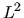

Next: About this document ...
Up: Subject Contents
Previous: Assembly Routines
- ADUNIT
- - Control the advisory message unit number
- BNDWTH
- - Calculates semi-bandwidth of system matrix
- DCSTRI
- - Calculates the direction cosines for triangular elements
- DCSQUA
- - Calculates the direction cosines for quadrilateral elements
- DCSBRK
- - Calculates the direction cosines for hexahedral elements
- DIRECT
- - Construction of steering vector for system matrix assembly
- ELGEOM
- - Construction of element geometry array for an element
- ERRMES
- - Controls processing of error conditions
- ERUNIT
- - Control the error message unit number
- FORMNF
- - Forms nodal freedom array
- FREDIF
- - Calculates of maximum freedom number difference for an element
- NORM
- - Computes the  norm of a vector
- SHAPFN
- - Forms shape function matrix N
- SELECT
- - Constructs an element solution vector
- SIDENO
- - Forms list of element and side numbers from boundary node list
- UPDATE
- - Updates solution vector with system solution
Chris Greenough
2000-08-02